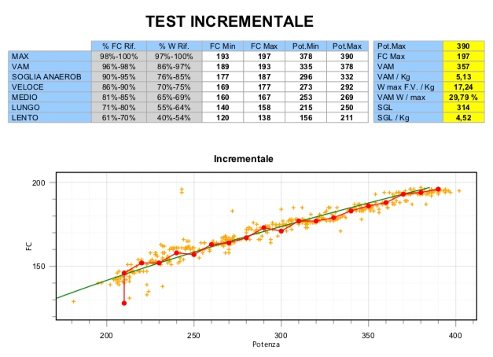
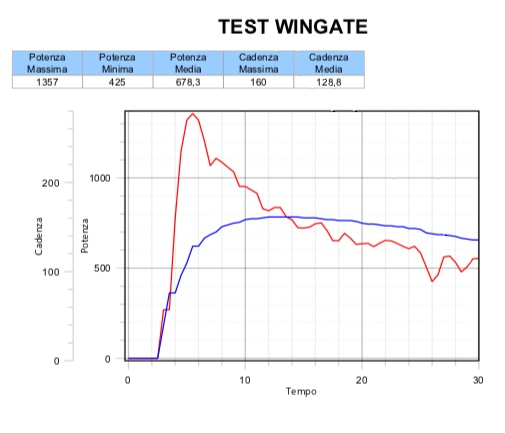
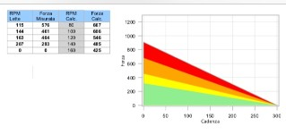
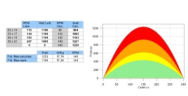
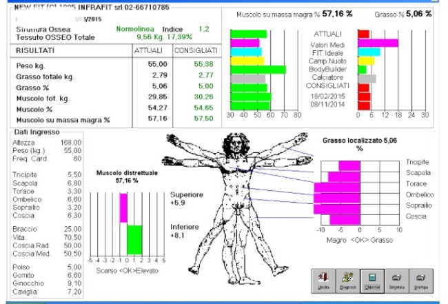

Valutazione funzionale dell'atleta

Test incrementale (Test aerobici):
per la valutazione della soglia anaerobica (Frequenza Cardiaca),
dei Watt alla soglia e del rapporto peso/potenza.
Fondamentale per il corretto utilizzo del cardiofrequenzimetro negli allenamenti e per la gestione nella prestazione
di endurance; inoltre fornisce dati oggettivi fondamentali hai fini della creazione di un programma allenante.
WINGATE TEST e CURVA POTENZA-CADENZA (Test anaerobici):

Test Wingate:
tramite questo Test possiamo calcolare il Picco di Potenza e la Potenzia media Meccanica.
Viene considerato il Picco di Potenza come il risultato dell'abilità globale ed integrata delle fibre muscolari di produrre,
in un tempo breve, il più alto grado di potenza meccanica possibile.
Il valore di Potenza Media, rispecchia la capacità che hanno i muscoli impegnati di sopportare alti livelli di potenza
meccanica protratti nel tempo.
Il decremento di potenza, in tale ottica, è considerato come espressione della cosiddetta RESISTENZA alla FORZA VELOCE.
 
Test Potenza-Cadenza:
utilizzato per individuare la relazione “Potenza-Cadenza di pedalata” rilevando il picco di
potenza massima, a quale cadenza di pedalata viene erogata la potenza massima, l'andamento della potenza alle varie RPM,
l’andamento della forza alle varie RPM, i ritmi di allenamento per la forza.
PLICOMETRIA, ANALISI DELLA COMPOSIZIONE CORPOREA:

Plicometria:
per analizzare la propria composizione corporea.
I principali risultati dopo l'elaborazione delle misure sono: percentuale e peso di tessuto osseo, percentuale
e peso di massa magra e massa grassa, stime del metabolismo basale, del consumo calorico, valori consigliabili
di peso e obiettivi da raggiungere.